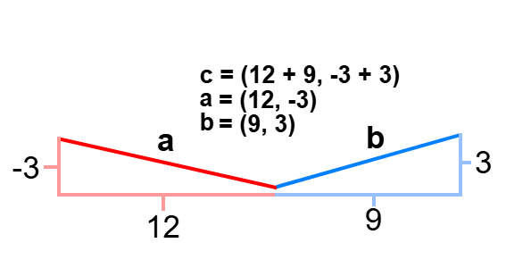

Vectors
Introduction
Vectors are lines that have a starting point and an ending point like this...
A vector has an intial point and an terminal point which can be called the head (terminal) or tail (initial) point of the vector...
A vector always has a specific direction and magnitude. The direction of a vector is where it's rotated at so a vector with a direction of 45° would be facing in the upper right corner. The magnitude of a vector however is the length of the vector and is noted with |vertical lines| or with ||two vertical lines||...
 Basically the magnitude of a vector is the length of it. Vectors are noted with bolded lowercase letters like a, b, or c or they can be noted with the head and tail letters put together with an arrow above them. With vectors you can make multidimensional shapes...
Vectors don't just have intial/terminating points, direction, and magnitude. They also have components which are basically just the x and y coordinates of the terminal point...
These components are noted as ax which is the distance on the x-axis and ay which is the distance on the y-axis.
Basically the magnitude of a vector is the length of it. Vectors are noted with bolded lowercase letters like a, b, or c or they can be noted with the head and tail letters put together with an arrow above them. With vectors you can make multidimensional shapes...
Vectors don't just have intial/terminating points, direction, and magnitude. They also have components which are basically just the x and y coordinates of the terminal point...
These components are noted as ax which is the distance on the x-axis and ay which is the distance on the y-axis.
Calculating Magnitude
To calculate the magnitude of a vector, you would use an alternate version of the Pythagoraen theorem...
|a| = √(x2 + y2)
So for example...
a = √(12, -7)
a = √(144 + 49)
a = √193
So the magnitude of a is the square root of 193 which can be rounded to 14.
Elementary Operations on Vectors
With these components you can do basic operations on them. For addition you add the two vectors ax and ay together...

The summation of a and b is (21, 0)...
You can also subtract vectors by reversing the signs of the second vector then add them...
a = (3, -6)
b = (-6, 8)
a = (3, -6)
b = (6, -8)
c = (3 + 6, -6 - 8)
c = (9, -14)
Multiplying Vectors
This is where the parallels between vectors and numbers end, unlike numbers vectors can be multiplied two ways, each way giving either a scalar or a vector. The difference between a scalar is a number that only has magnitude, a vector has a direction and a magnitude.
Vector x Scalar
To multiply a vector by a scalar (a number), you multiply the x and y components of the vector by the scalar...
a = (5, 3)
5a = (5 * 5, 3 * 5)
5a = (25, 15)
The vector is (25, 15) with the same direction. Multiplying a vector by a scalar doesn't change the angle of it.
Vector x Vector
There are two ways to multiply a vector by a vector. You can find the Dot Product which gives a scalar or the Cross Product which gives a vector.
Dot Product
To find the dot product of vectors, you can either multiply the magnitude of vector a with the magnitude of vector b and with the cosine of θ. Or you can multiply ax with bx plus ay with by...
a = (7, 12)
b = (8, 10)
a ˙ b = ???
Dot Products are noted with a dot in the center. Be VERY careful with this notation
a ˙ b = 7 * 8 + 12 * 10
a ˙ b = 56 + 120 = 176
|a| * |b| * cos(θ)
√193 * √164 * cos(8.406°)
13.892 * 12.806 * 0.989 = 175.9 ≈ 176
I recommend using the first method since the second one uses cosine, a trig function that can only be calculated using a calculator.
Cross Product
To find the cross product of vectors, multiply the magnitude of all the vectors times the sine of θ times the unit vector of both vector a and b...
|a| * |b| * sin(θ) * n
Or for a way more simple approach...
cx = aybz - azby
cy = azbx - axbz
cz = axby - aybx
For both methods, 3 dimensions are used to calculate...
a = (1, 6, 3)
b = (3, 2, 4)
cx = 6(4) - 3(2)
cy = 3(3) - 1(4)
cz = 1(2) - 6(3)
cx = 24 - 6 = 18
cy = 9 - 4 = 5
cz = 2 - 18 = -16
c = (18, 5, -16)
3D Vectors
Vectors can also have three dimensions...
a = (1, 2, 3)
With 3D vectors, calculations will change...
|a| = √(a2 + b2 + c2)
ba = b(ax, ay, az)
a ˙ b = axbx + ayby + azbz
Done? Here are other Links
Back to Main Page
Back to Informational